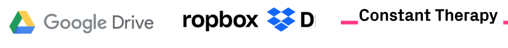
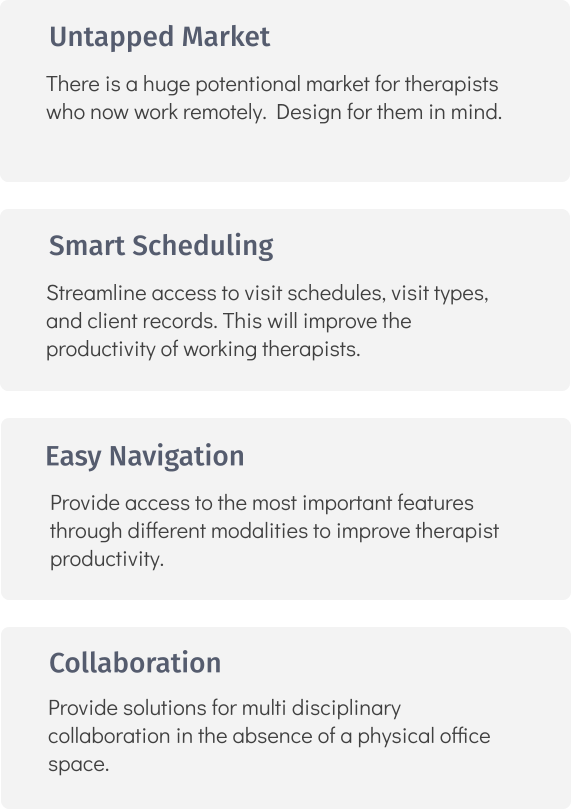
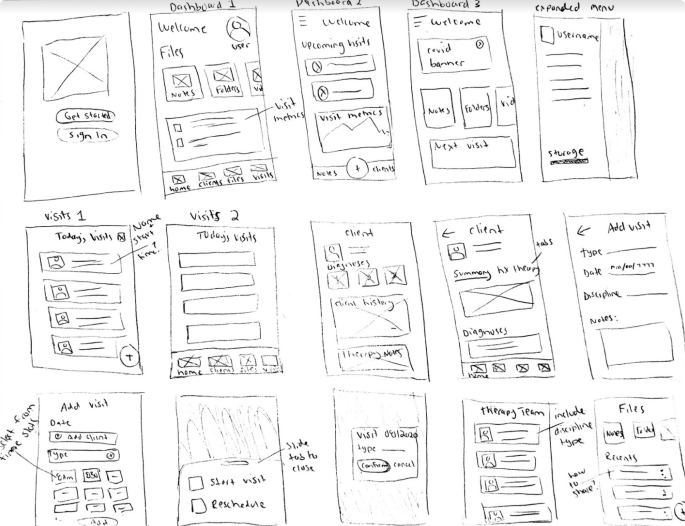

TheraShelf
Do therapy differently.
TheraShelf is a cloud storage workspace solution for home health therapists delivering remote rehabilitation services. Designed in response to the COVID19 outbreak.
My Role
Research
Brand & Identity
UX/UI Design
Deliverables
Surveys
Competitive Analysis
User Stories
Wireframes
Clickable Prototypes
Usability Testing
High Fidelity Mockups
Tools
Pen & Paper
Google Forms
Figma
The Problem
There has been an abrupt shift to a remote service model for rehabilitation therapies since the COVID19 outbreak. It is difficult to track clients, manage caseloads, and organize therapy materials without the physical office space.
The Solution
TheraShelf includes features that allow therapists to be more efficient and productive during the work week. It streamlines the most important therapy tasks while promoting collaboration with the multi-disciplinary team. All done remotely.
The Design Process
Surveys
A survey was conducted with 20 respondants to gain a better understanding of user experiences with cloud storage products. I included questions that explored motivations, rankings, and pain points. The qualitative data collected during surveys would drive design decisions down the road. Important findings include:

Competitive Analysis

An analysis was completed with some popular cloud storage products that are already on the market. Google Docs provided the largest array of features that could be used for therapy tasks. However, none of these features address therapist's needs head on. There is still a considerable amount of effort required by the user to accomplish healthcare goals with this product.
While Constant therapy is designed for the therapy population, it's primary function is to provide therapy materials to the clients. There are absolutely no collaboration features, and the user is unable to create new content or customize content to the needs of each client.
Key Takeaways
I was able to carve out some actionable insights from the data collected from the surveys and analysis of current cloud storage products. Key takeaways include: 
Personas
After completing my initial survey analysis, I had follow up conversations with two of the respondants. I gained a more thorough understanding of their frustations, goals, and attitudes towards cloud storage products. I developed personas to represent an inclusive and full spectrum representation of TheraShelf users. The personas will be referenced frequently during the design process to maintain true user emapthy.
User Flows
I created user flows to represent how a user would interact with TheraSelf to accomplish the high priority user stories. From there, a site map was created to help organize the destinations for each of the user flows.
 View All User Flows
View All User Flows
Wireframes
It was finally time to put pen to paper. I started by sketching out possible layouts for the product pages based on the main user flows. Rapid iterations allowed me to make some initial design decisions quickly and efficiently. I then created digital wireframes for my first round of usability testing.

Making the Brand
When making branding decisions, I carefully considered the target audience, user personas, and overarching goals of the product. The overall feel of the brand is intended to promote healing, growth, and simplicity. These traits are ideal for a health care product that centers around the rehabilitation process.
Color Palette & Icons
The primary color for TheraShelf is a bright blue to represent trust, tranqulity, and knowledge. Several of the secondary colors also fall in the blue and green families to communicate growth and healing. Icons are designed to be clear and simple throughout the product.
Typography
Both the primary brand typeface and complementary typeface are geometric sans-serif fonts. The typefaces are clean and easy to read at all sizes. It translates well from desktop to a mobile platform.
Put it to the Test
Using my low fidelity wire frames for reference, I created a clickable prototype in Figma. I completed remote usability testing with three participants to assess the effectiveness of the product design. They were presented with the following tasks:
Create a new account
View today’s visits
View a client’s chart
Assign a note to your client
Problem 1: Difficulty navigating to high priority features from dashboard
There was a bit of an overhaul to the dashboard page. The bottom toolbar was removed completely and a hamburger menu was added instead. The second iteration uses space more effectively and eliminates the need for ambiguous buttons. The metrics were replaced with buttons to allow direct access to recent and most used features.
Problem 2: The client page contains bulky, time consuming diagnostics
The revised client screen better organizes therapy information by creating a separate summary tab. The most important diagnostic information is highlighted on this page to maximize therapist productivity. Lengthier, full scale assessment information is now housed under the therapy tab.
Prototyping & More Testing
A high fidelity prototype was created in Figma. I was careful to include the visual elements defined by the branding guidlines and first round of user testing. I completed another round of remote usability testing with the high fidelity prototype.
Problem 3: Returning to the dashboard and user account page
Users had no easy way to return to the dashboard and user account after navigating away from this page. A home link was added to the menu options when the hamburger menu is clicked. The user can now return to the dashboard quickly from any other product page.
Preference Testing
I considered different configurations for the menu on the client overview page. Users were able to choose between the slide feature or tab menu to highlight content pages during navigation. The majority of users preferred the slide feature since it was clearer and more eye catching compared to the tab menu. The design element was implemented throughout the product.
The Final Prototype
 View Final Prototype
View Final Prototype
Time to Wrap Things Up
What's Next
Next steps would be to implement more of the low priority user stories to make a complete product with specialized features for health care professions. For example, adding templated notes will allow the users to be more efficient and organized when creating content. I would follow that up with another round of usability testing and revisions as needed.
My Take Aways
This project alowed me to mature and gain strong footing as a UX designer. I learned to check my personal expectations throughout the different phases of the design process. My ideations did not necessarily translate as clearly and effectively as I intended during user testing. However, I was able to embrace the design process and rely on user feedback to work through several iterations of the product. Designs that fall back on data and tangible research create the best user experience.
Final Thoughts
TheraShelf underwent some major and minor changes to the design elements and layout. At the end of the day, TheraShelf finds its place amoungst other cloud storage products by targeting a niche health care audience. It provides creative solutions to our new remote world.